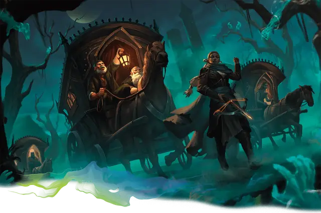

Скиталец Туманов
Mist Wanderer
Средний или Маленький Гуманоид, Нейтральный

Класс Защиты 13 Инициатива +2 (12)
Хиты 52 (8к8 + 16)
Скорость 30 футов
| мод | спас | ||
|---|---|---|---|
| СИЛ | 10 | +0 | +0 |
| ЛОВ | 14 | +2 | +2 |
| ТЕЛ | 14 | +2 | +2 |
| мод | спас | ||
|---|---|---|---|
| ИНТ | 12 | +1 | +1 |
| МДР | 16 | +3 | +3 |
| ХАР | 13 | +1 | +1 |
Чувства пассивное Восприятие 13
Языки Общий плюс ещё один язык
Опасность 3 (700 опыта; БВ +2)
Особенности
Посмертное проклятье. Спасбросок Харизмы: Сл 13, все существа в 5-футовой Эманации, исходящей от скитальца, когда он умирает. Провал: Цель проклята. Проклятая цель Ослеплена и Оглушена.
Ходок Туманов. Скиталец может безопасно путешествовать сквозь Туманы и беспрепятственно достигать конкретных доменов, известных ему по названию. Тем не менее скиталец не может преодолеть границы домена, закрытого волей Тёмного владыки.
Действия
Мультиатака. Скиталец совершает две атаки Сияющей вспышкой. Он может заменить одну из этих атак использованием Сотворения заклинаний (Пронзание разума), если оно доступно.
Сияющая вспышка. Бросок рукопашной или дальнобойной атаки: +5, досягаемость 5 фт. или дистанция 60 фт. Попадание: 14 (2к10 + 3) урона Излучением.
Сотворение заклинаний. Скиталец Туманов сотворяет одно из следующих заклинаний (заклинательная характеристика — Мудрость, Сл спасброска заклинаний 13):
Неограниченно: Волшебная рука, Свет
1/день каждое: Гадание, Обнаружение магии, Пронзание разума
Бонусные действия
Дурной глаз (1/день). Скиталец сотворяет Удержание личности (заклинательная характеристика — та же, что для Сотворения заклинаний).
Бонус мастерства +2
Среда обитания Любая
Сокровища Личные, Магические
Скиталец Туманов
Путешественник между доменами
Те, кто странствует меж Доменов Ужаса, вырабатывают особые приёмы, ускоряющие путь и оберегающие от зла. Вистани, а также те, кто изучает их обычаи или тайны Туманов, — самые искусные из подобных исследователей доменов.